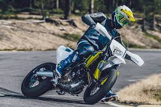
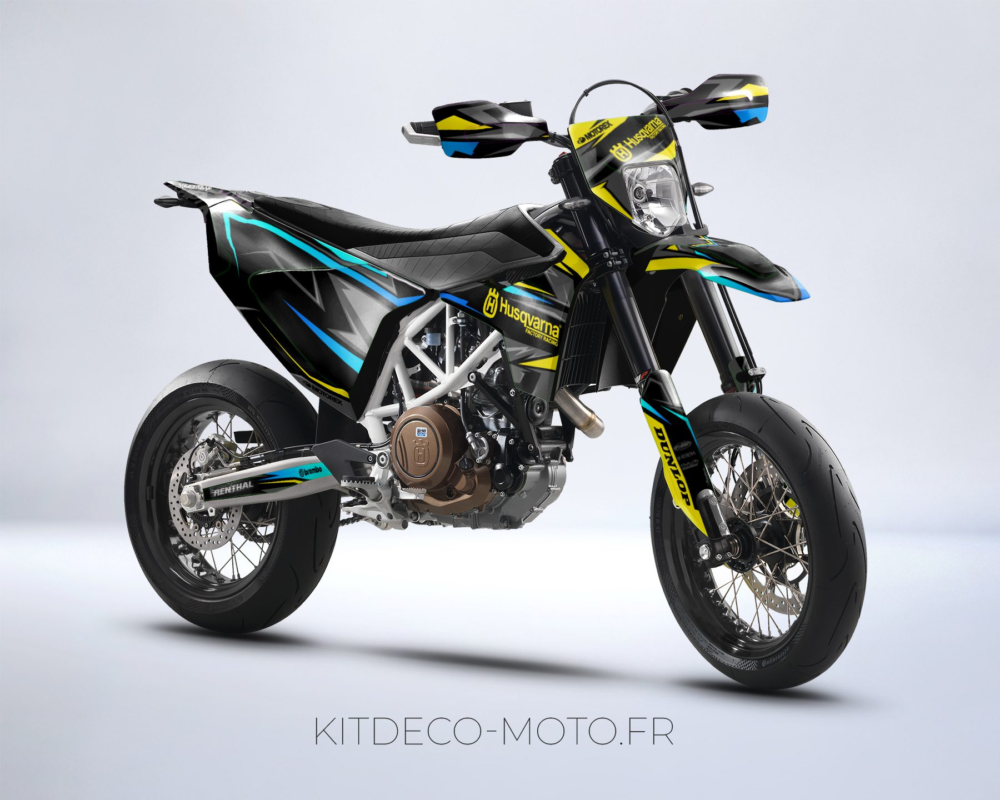
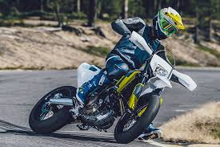
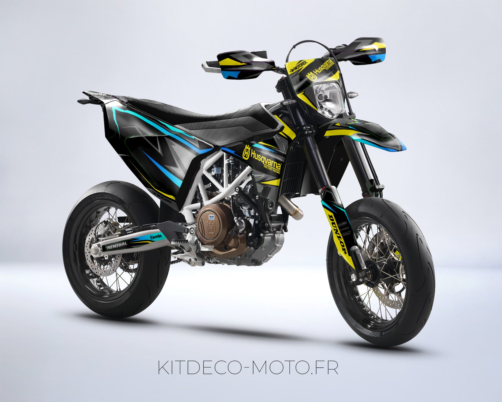

La Husqvarna 701 es una motocicleta de enduro y supermoto de alta gama que combina potencia, agilidad y estilo. Con un motor monocilíndrico de 690 cc y tecnología avanzada, ofrece una experiencia de conducción emocionante tanto en carreteras asfaltadas como en terrenos off-road. Su chasis ligero y maniobrable, junto con suspensiones ajustables de alto rendimiento, garantizan un manejo preciso y controlable en cualquier tipo de terreno. Diseñada con un estilo moderno y distintivo, la Husqvarna 701 es una opción popular entre los entusiastas del motociclismo que buscan una máquina versátil y de alto rendimiento para dominar cualquier aventura sobre dos ruedas.
 


